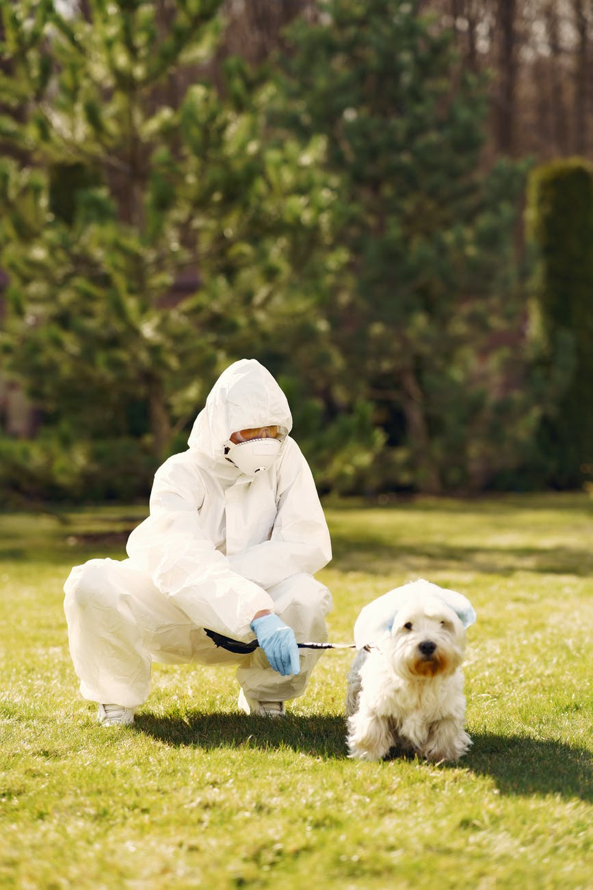

There is someting strange going on.
Hi, my name is Scruffles...
I've never been a huge fan of social media, but I created this account to stay close with my wife, Puff. It seems that my hoomans have gone insane! There are toilet-paper-roll piles all over the house, and they get upset with me if I try to play with their precious TP. I’ve also noticed strange behavior in other hoomans on walks. I'm not sure what's going on with all of the hoomans, but I hope that everyone is okay.
My hoomans have been home ALL THE TIME (including the small hooman). I'm currently missing my wife a lot and would really like to see her. My hoomans haven’t wanted to see any other hoomans for about a month now, so I’m not able to meet up with Puff or any other friends. I miss you pretty floof!
I've noticed most of the hoomans have been wearing gloves and masks on walks. I'm not sure if it's the new hooman fashion, but it's a little scary for me. Plus, rubber gloves feel uncomfortable when hoomans pet me while wearing them. My hoomans take their scary fashion off at home, thank goodness. I haven't been able to come up with a conclusion as to why my hoomans need this much toilet paper though!
Having my hoomans home all the time is nice, but the small hooman won't leave me alone. He keeps picking me up and making me beds in his laundry basket. I've been spending a lot of time hiding under my hoomans desk to get space from the little hooman. He seems like he might be bored from all this time at home. Its tough being this cute, fluffy, and snuggly.
The highlight of my day has been gardening with my lady hooman. She has been planting and digging in the back yard lately. I really like digging and occasionally she throws sticks for me to fetch. It's nice to get to spend time with her now that she's home more often. I'm doing my best to have a good time and I’m sure other dogs have been facing challenges as well. I'm wishing the best for all you floofs out there who are having a rough time! I hope our hoomans start acting normal again soon.